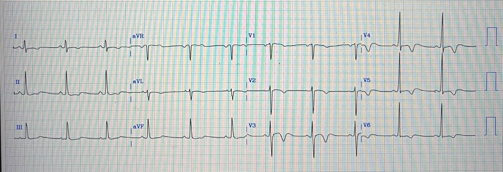
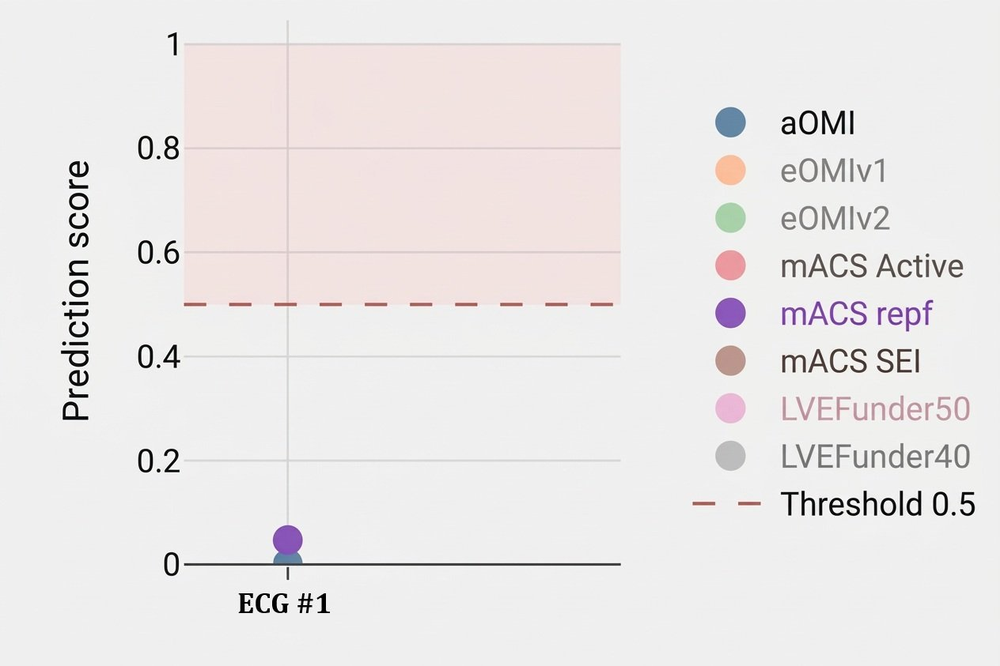
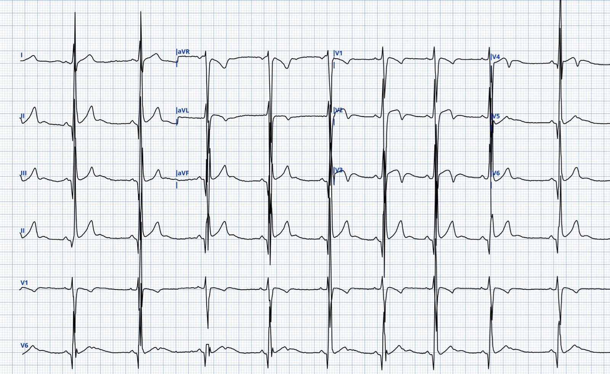
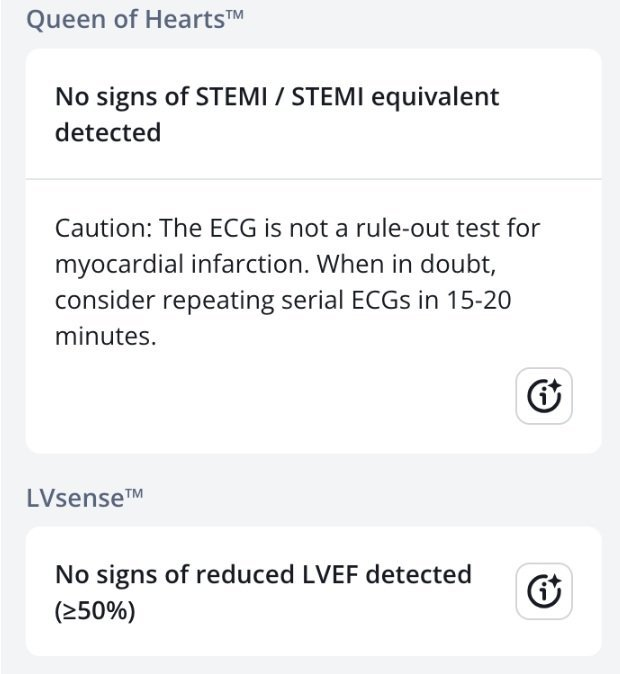
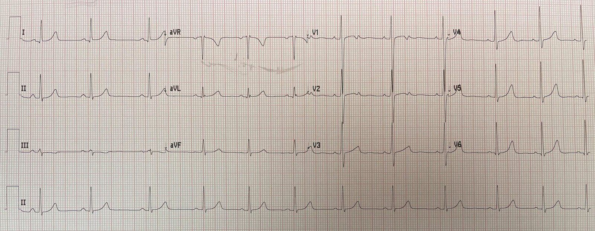
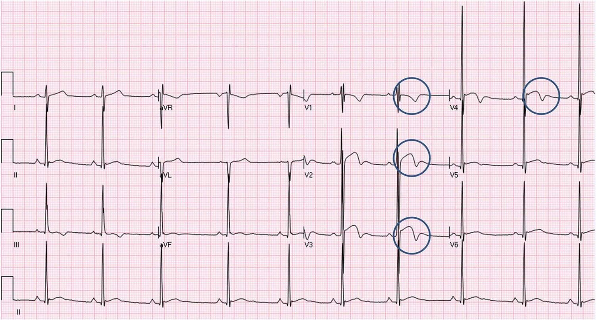
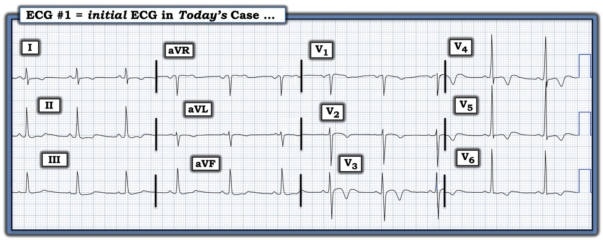

23/04/2026 — Bạn sẽ diễn giải các sóng T đảo ngược này như thế nào? Và “kẻ đứng ngoài vô can” (innocent bystander) trên chụp mạch vành là gì?
Bản dịch tiếng Việt của bài "How would you interpret these T wave inversions? And what is an “innocent bystander” on angiogram?" – Dr. Smith’s ECG Blog. Giữ nguyên toàn bộ 8 hình ảnh của bản gốc.
Tác giả: Magnus Nossen
Tôi đang xem lại các điện tâm đồ trên máy tính thì bắt gặp ca hôm nay. Tôi chỉ có ít thông tin về kết cục. Tôi chỉ biết bệnh nhân là nam giới ở độ tuổi 30 và đã được can thiệp mạch vành qua da (PCI) động mạch LAD. Troponin tăng ở mức vừa phải.
Điện tâm đồ dưới đây được ghi sau PCI. Bạn sẽ mô tả những thay đổi quan sát được như thế nào, và bạn có cho rằng những thay đổi này sẽ dần dần biến mất theo thời gian hay tồn tại kéo dài?
Điện tâm đồ #1


Điện tâm đồ cho thấy nhịp xoang tần số khoảng 65 nhịp/phút, phức bộ QRS hẹp. Có sóng T đảo ngược ở các chuyển đạo trước tim, rõ nhất ở V3-V4.
Sau khi đọc phần này, hãy xem diễn giải của Dr. Smith ở cuối bài.
Sau một thủ thuật tái tưới máu, giải thích khả dĩ nhất cho sự xuất hiện của sóng T đảo ngược (T-wave inversion, TWI) được cho là mới là nó phản ánh những thay đổi liên quan đến tái tưới máu.
Tuy nhiên, có rất nhiều nguyên nhân tiềm tàng gây sóng T đảo ngược. Các hình ảnh TWI có thể khó phân biệt với nhau và bạn cần là một người đọc điện tâm đồ thành thạo mới có thể làm điều đó một cách tự tin. Đôi khi các điện tâm đồ liên tiếp và việc so sánh với điện tâm đồ trước đó rất hữu ích. Đôi khi TWI thực sự không đặc hiệu hoặc không có giá trị chẩn đoán.
Một số thông tin và ví dụ về các nguyên nhân khác nhau của TWI
TWI có thể chiếm ưu thế ở các chuyển đạo bên phải, các chuyển đạo bên trái, hoặc có thể lan rộng và phân bố toàn bộ trên điện tâm đồ. Nói chung, có thể nói rằng TWI chủ yếu ở các chuyển đạo bên phải V1-V3 nhiều khả năng phản ánh bệnh lý thất phải (RV), trong khi TWI quan sát thấy chủ yếu ở các chuyển đạo bên nhiều khả năng đại diện cho bệnh lý thất trái. TWI lan rộng có thể do nhiều nguyên nhân, trong đó một số nằm “bên ngoài” tim.
Các nguyên nhân bên ngoài gây TWI bao gồm, trong số những nguyên nhân khác, bệnh lý nội sọ, có thể gây ra sóng T đảo ngược khổng lồ, kể cả “dấu hiệu mũ chóp nhọn” (spiked helmet sign). Một nguyên nhân bên ngoài khác của TWI là bệnh cơ tim do stress, còn gọi là bệnh cơ tim Takotsubo. Thực thể lâm sàng này do đáp ứng quá mức của tim đối với catecholamine và sự hoạt hóa hệ thần kinh tự chủ.
Sóng T tái tưới máu có thể thấy ở các chuyển đạo khác nhau vì chúng đi theo vùng phân bố của động mạch vành. Sóng T tái tưới máu có tính động, tiến triển dần dần và thường biến mất sau vài giờ đến vài ngày. Để xem một ví dụ về bản chất động của hội chứng vành cấp (ACS) và sự tiến triển của sóng T tái tưới máu, hãy xem ca gần đây này. Và đây là một ví dụ gần đây về giả bình thường hóa.
Sóng T đảo ngược chủ yếu ở bên phải (V1–V3) thường gặp ở trẻ em và là một dấu hiệu sinh lý đối với nhóm bệnh nhân này. Hình ảnh này có thể thấy ở người lớn và được gọi là sóng T thiếu niên tồn tại dai dẳng (persistent juvenile T‑waves). TWI bên phải cũng có thể gặp khi tăng gánh thất phải cấp, điển hình nhất là do thuyên tắc phổi cấp. TWI bên phải cũng gặp trong các nguyên nhân khác như thuyên tắc mỡ hoặc co mạch cấp do thiếu oxy trong COPD hoặc đợt cấp hen phế quản. TWI bên phải mạn tính gặp trong phì đại thất phải (RVH) và cũng gặp trong bệnh cơ tim gây loạn nhịp, quá tải áp lực thất phải mạn tính, và quá tải thể tích thất phải mạn tính.
Sóng T đảo ngược chủ yếu ở bên trái (V4–V6 và các chuyển đạo bên I, aVL) gặp trong LVH và bệnh cơ tim phì đại (mỏm). Sóng T đảo ngược lan rộng hơn có thể gặp sau các cơn Stokes–Adams, bệnh cơ tim Takotsubo, nhiễu, hoặc tai biến mạch máu não. Ngoài ra, sóng T đảo ngược có thể là thứ phát sau phức bộ QRS rộng, bao gồm blốc nhánh, nhịp tạo nhịp, PVC và tiền kích thích.
Quay lại ca bệnh. Khi lần đầu nhìn thấy điện tâm đồ #1, tôi không tin chắc rằng điện tâm đồ này đặc hiệu cho tái tưới máu. Thật khó diễn đạt chính xác thành lời vì sao. Sóng T đảo ngược xuất hiện sớm trong khoảng QT và phức bộ QRS có điện thế khá cao. Tôi không nghĩ điện tâm đồ này thể hiện sóng T tái tưới máu kiểu Wellens, và nghĩ rằng chỗ hẹp được xử trí trong phòng thông tim có lẽ không liên quan đến các dấu hiệu trên điện tâm đồ. Tôi đã chia sẻ bản ghi với Dr. Herman và Dr. Smith, cả hai đều trả lời rằng họ cũng nghĩ đây nhiều khả năng là một hình ảnh giả Wellens. Mô hình AI Queen of Hearts cũng không phân loại đây là hình ảnh tái tưới máu, với điểm dự đoán tái tưới máu rất thấp.
Điểm dự đoán của QoH


Các kết quả đầu ra khác nhau của mô hình đối với điện tâm đồ #1. Giá trị aOMI được biểu thị bằng chấm màu xanh xám. Nếu điểm dự đoán aOMI >0,5, QoH sẽ đưa ra kết quả là OMI đang diễn ra (active OMI). Như bạn thấy, giá trị này gần bằng 0. Nếu điểm dự đoán mACS repf (chấm màu tím) >0,5, mô hình sẽ xếp điện tâm đồ là NSTEMI nguy cơ cao (= OMI đã tái tưới máu). Như bạn thấy, điểm OMI đã tái tưới máu là < 0,1
Thật trùng hợp, trong lúc chúng tôi đang bàn về điện tâm đồ #1, Dr. Smith nhận được một bản ghi khác có hình ảnh tương tự. Đây là thông tin lâm sàng ông nhận được: “một nam giới 20 tuổi không có tiền sử bệnh lý, đến khám vì đau thượng vị 3 ngày. Điện tâm đồ lúc phân loại”.
Điện tâm đồ # 2 (bệnh nhân khác)


Người gửi đã dùng QoH để đọc điện tâm đồ và rất ngạc nhiên khi mô hình AI không gắn cờ TWI trên điện tâm đồ này là “NSTEMI nguy cơ cao”.
Dưới đây là diễn giải của Queen of Hearts đối với điện tâm đồ #2. Mô hình AI không diễn giải điện tâm đồ này là đáng lo ngại cho OMI đang diễn ra hay OMI đã tái tưới máu.


Vì sao cả hai điện tâm đồ này đều không thể hiện tái tưới máu?
Các điện tâm đồ trình bày trong ca hôm nay trông hơi giống sóng T đảo ngược lành tính (BTWI), nhưng có khác biệt đôi chút. Trước hết, BTWI thường có sóng J nổi bật, mà điều này không thực sự rõ trong các ví dụ điện tâm đồ hôm nay.
Với bệnh nhân thứ nhất, điện tâm đồ trước đó hoặc các điện tâm đồ liên tiếp lẽ ra đã làm rõ liệu sóng T đảo ngược có một phần do tái tưới máu hay không. Tôi cho rằng điện tâm đồ sẽ hầu như không thay đổi, nhưng để chắc chắn thì cần có các điện tâm đồ liên tiếp. Tôi nghĩ đây là cách duy nhất để đánh giá liệu tái tưới máu có góp phần vào các dấu hiệu trên điện tâm đồ hay không. Đáng tiếc là không có cả bản ghi liên tiếp lẫn điện tâm đồ trước đó để so sánh. Điều khiến tôi nghĩ hình ảnh này nhiều khả năng không do tái tưới máu là hình thái của đoạn ST và sóng T, và sóng dương lớn xuất hiện sau TWI ở các chuyển đạo V3-V5. Những sóng dương này nhiều khả năng là sóng U. Theo kinh nghiệm của tôi, sóng U lớn như vậy không thường gặp và tôi chưa từng thấy nó trong tái tưới máu.
Hình ảnh điện tâm đồ trong ca thứ hai hôm nay rõ ràng lành tính hơn. Hình ảnh này thường gặp ở nam giới trẻ tuổi và đặc trưng bởi điện thế cao. Một lần nữa, có sóng U nổi bật và khoảng QTc ngắn, với sóng T đảo ngược xuất hiện “sớm”. Đáng chú ý, các TWI này không đối xứng. Sóng T tái tưới máu, nhất là ở giai đoạn muộn, thường đối xứng hơn so với những gì quan sát thấy trên các điện tâm đồ trình bày trong bài này. Bệnh nhân thứ hai đã được loại trừ nhờ xét nghiệm troponin liên tiếp. Hình ảnh điện tâm đồ này không cần thăm dò thêm.
Smith: điều khiến tôi rất hoài nghi về sóng Wellens là: 1) sóng U lớn và 2) điện thế sóng R lớn ở V4-5. Tôi đã thấy hình ảnh này nhiều lần, và tôi tin rằng đã từng đăng bài về nó (xem bên dưới).
Smith: Vì sao điều này quan trọng? Chẳng phải troponin tăng và tổn thương LAD đã chứng minh đây là hội chứng Wellens sao? Không hẳn! Troponin có thể tăng vì nhiều lý do, bao gồm cả các nguyên nhân không phải ACS và cả do một tổn thương thủ phạm ở một động mạch khác. Điện tâm đồ đã gợi ý cho bác sĩ can thiệp rằng đó là LAD. Nhưng tổn thương ở LAD được can thiệp có thể chỉ là một “kẻ đứng ngoài vô can” (innocent bystander). Kẻ đứng ngoài vô can là một tổn thương hẹp mà bác sĩ can thiệp tin là thủ phạm trong khi thực ra không phải. Đây là lý do vì sao cần nhận ra các hình ảnh này — chúng có thể thay đổi cách xử trí của bạn. Điều duy nhất có thể thuyết phục tôi rằng điện tâm đồ này thể hiện tái tưới máu LAD là nếu có sự tiến triển trên các điện tâm đồ liên tiếp sau đó (điều mà chúng tôi không có).
“Kẻ đứng ngoài vô can” (Innocent Bystander) là gì? Xem bài này: Anterior OMI. What does the angiogram show?
Không nên nhầm loại sóng T đảo ngược này với sóng T HAI ĐỈNH (BIFID T-waves) (xem chuyển đạo V2).


Smith: Cuối cùng, thêm một ví dụ nữa mà tôi nghĩ là từ Smith ECG Blog (Có thể tôi đã tìm thấy nó trên trang của người khác. Nếu vậy, xin hãy cho tôi biết.)


= = =
Những điểm cần học
- Dù sóng T đảo ngược có thể không đặc hiệu, việc học các hình ảnh TWI khác nhau sẽ giúp bạn rất nhiều trong việc xử trí bệnh nhân theo cách tốt nhất có thể.
- Biết được hình ảnh TWI nào là lành tính sẽ giảm bớt các thăm dò và theo dõi không cần thiết.
- Nhiều loại TWI có bản chất động. Các điện tâm đồ liên tiếp, so sánh với các điện tâm đồ trước đó của bệnh nhân, và đánh giá bằng siêu âm tim thường sẽ rất hữu ích trong việc đánh giá các hình ảnh TWI.
= = =
======================================
BÌNH LUẬN CỦA TÔI, bởi KEN GRAUER, MD (23/4/2026):
Hãy tưởng tượng bạn được cho xem điện tâm đồ ở Hình 1 — và được cho biết bản ghi này được ghi trong một đợt khám sức khỏe trước tuyển dụng, ở một nam giới trẻ tuổi khỏe mạnh, không triệu chứng. Với bối cảnh lâm sàng đó:
— BẠN sẽ diễn giải bản ghi này như thế nào? —
= = =
Hình 1: Điện tâm đồ hôm nay. (Để dễ quan sát hơn — tôi đã số hóa điện tâm đồ gốc bằng PMcardio).


= = =
SUY NGHĨ CỦA TÔI:
Nếu được cho biết điện tâm đồ ở Hình 1 được ghi ở một nam giới trẻ tuổi khỏe mạnh, không triệu chứng — tôi sẽ nghi ngờ bản ghi này là một biến thể tái cực lành tính vì:
- Nó “trông giống” một biến thể tái cực lành tính.
- Nhịp là nhịp xoang. Khoảng PR bình thường, QRS hẹp — và nếu có gì thì QTc trông tương đối ngắn. Trục mặt phẳng trán bình thường. Tùy theo tuổi của bệnh nhân — biên độ sóng R tương đối lớn ở các chuyển đạo trước tim bên có thể (hoặc có thể không) đạt tiêu chuẩn điện thế của LVH.
- Không có sóng Q và tăng tiến sóng R hoàn toàn bình thường (với sóng R nổi bật từ chuyển đạo V3 — và vùng chuyển tiếp xảy ra bình thường giữa chuyển đạo V3 và V4).
- Đáng chú ý nhất là dấu hiệu sóng T đảo ngược ở nhiều chuyển đạo — nhưng điều này đi kèm với:
- Hình dạng lành tính ở chuyển đạo V3 — chuyển đạo có sóng T đảo ngược sâu nhất này biểu hiện ST dạng vòm (coving) rất mềm mại kèm ST chênh lên nhẹ (và sóng U chênh lên ở phần cuối).
- Hình dạng cũng lành tính không kém ở chuyển đạo V4 — trong đó TWI sâu đi kèm biên độ sóng R lớn, sóng s rất nhỏ (và sóng U chênh lên ở phần cuối).
- “Chuyển tiếp” mềm mại ở các chuyển đạo lân cận dẫn tới và đi ra khỏi các chuyển đạo V3,V4 trông lành tính này (tức là ở các chuyển đạo V1,V2; và V5,V6).
- Chỉ có bất thường ST-T không đặc hiệu ở mức nhẹ ở các chuyển đạo chi.
- Nhận định của tôi về Hình 1: Với bệnh sử nêu trên, nếu điện tâm đồ này qua tay tôi — tôi sẽ nghi ngờ bản ghi này là một dạng BTWI (sóng T đảo ngược lành tính – Benign T Wave Inversion). Dù vậy — tôi chắc chắn sẽ đề nghị đối chiếu lâm sàng (tức là hỏi cụ thể để chắc chắn rằng bệnh nhân vẫn hoạt động và thực sự không có triệu chứng — và nghe tim cẩn thận để chắc chắn không có tiếng thổi). Tôi có thể đề nghị siêu âm tim để xác nhận không có bất thường cấu trúc tiềm ẩn — nhưng tôi sẽ nghi ngờ BTWI (Xem bên dưới trong PHẦN BỔ SUNG của tôi).
= = =
Quay lại CA BỆNH hôm nay:
Bây giờ hãy tưởng tượng rằng bạn được cho biết chính điện tâm đồ này (mà tôi lại tái hiện ở Hình 2) — được ghi ở một nam giới độ tuổi 30 đến khoa cấp cứu (ED) vì CP (đau ngực) — và được phát hiện troponin tăng vừa phải, dẫn đến thông tim và PCI cho một tổn thương “thủ phạm” ở LAD. Bạn không được cung cấp thêm thông tin lâm sàng nào — ngoài việc điện tâm đồ ở Hình 2 được ghi sau PCI. Với bối cảnh lâm sàng này (về cơ bản đây là bệnh sử mà Dr. Nossen cung cấp cho bệnh nhân thứ 1 ông trình bày).
— Giờ đây BẠN sẽ diễn giải điện tâm đồ ở Hình 2 như thế nào? —
= = =
Hình 2: Hãy XEM LẠI điện tâm đồ hôm nay — giờ đây khi biết rằng người đàn ông độ tuổi 30 này đến khám vì CP — rằng anh ta có troponin tăng vừa phải — và rằng anh ta được PCI cho một “thủ phạm” ở LAD, với điện tâm đồ này là bản ghi sau PCI đầu tiên.
= = =
Suy nghĩ của tôi về điện tâm đồ ở Hình 2:
Đây là chính điện tâm đồ được trình bày ở Hình 1 — nhưng với bệnh sử khác được cung cấp (trong đó bệnh nhân này bị CP, troponin tăng vừa phải, và được PCI cho một “thủ phạm” ở LAD — với điện tâm đồ này là bản ghi sau PCI) — tôi sẽ nghi ngờ ít nhất một phần sóng T đảo ngược ở các chuyển đạo trước tim là thành phần tái tưới máu sau PCI.
- Tôi vẫn nghĩ rằng hình dạng tổng thể của điện tâm đồ ở Hình 2 trông hơi bất thường đối với tái tưới máu một “thủ phạm” LAD, xét đến tăng tiến sóng R bình thường với biên độ sóng R lớn và những thay đổi ST-T lan tỏa này quá sớm sau PCI — nhưng các dấu hiệu ở chuyển đạo dưới có thể là thay đổi soi gương — và với mô tả các dấu hiệu lâm sàng và thông tim, bệnh nhân này hẳn phải có một tổn thương LAD đã được tái tưới máu bằng PCI — vì vậy ít nhất một phần sóng T đảo ngược này có thể là thay đổi do tái tưới máu
- Tôi sẽ cố gắng hết sức tìm trong hồ sơ của bệnh nhân một bản ghi trước đó được ghi trước hôm nay.
- Tôi sẽ tìm trong hồ sơ bệnh án hôm nay (tức là Hẳn phải có một điện tâm đồ sớm hơn được ghi lúc phân loại hoặc tại khoa cấp cứu trước khi thông tim!).
- Nhận định của tôi về Hình 2: Có lẽ tôi sẽ nghi ngờ rằng nam giới trẻ tuổi này có thể có một dạng biến thể tái cực sẵn có từ trước — mà trên nền đó, một phần sóng T đảo ngược thấy ở Hình 2 là thay đổi tái tưới máu sau PCI chồng lên.
= = =
PHẦN BỔ SUNG: Các đặc điểm điện tâm đồ then chốt gợi ý BTWI
Dưới đây tôi trích từ Bình luận của tôi trong bài ngày 30 THÁNG SÁU NĂM 2023 trên Dr. Smith’s ECG Blog — 9 Tiêu chuẩn mà Drs. Wang và Smith đã đúc kết qua nhiều năm như những gợi ý của BTWI. Khi có kinh nghiệm — việc nhận ra các tiêu chuẩn này trở nên tự động — nhưng cho đến khi đạt tới mức kinh nghiệm đó, việc tham khảo danh sách gạch đầu dòng 9 Tiêu chuẩn sau đây có thể vô cùng hữu ích. (LƯU Ý: Sau mỗi tiêu chuẩn, tôi ghi trong ngoặc đơn những dấu hiệu liên quan đến điện tâm đồ hôm nay):
- Tiêu chuẩn #1: Khoảng QT tương đối ngắn (Giả sử sóng dương tròn chênh lên theo sau sóng T đảo ngược ở các chuyển đạo V3,V4,V5 là sóng U — thì QTc trông chỉ vừa khoảng 400 msec.).
- Tiêu chuẩn #2: Các chuyển đạo có sóng T đảo ngược thường có sóng J rất rõ (Không thấy trên điện tâm đồ hôm nay …).
- Tiêu chuẩn #3: Sóng T đảo ngược thường ở các chuyển đạo V3-V6 — trái ngược với hội chứng Wellens, trong đó sóng T đảo ngược thường ở các chuyển đạo V2-V4 (Sóng T đảo ngược trên điện tâm đồ hôm nay rõ nhất ở các chuyển đạo V3,V4,V5).
- Tiêu chuẩn #4: Sóng T đảo ngược không tiến triển và nhìn chung ổn định theo thời gian — trái ngược với hội chứng Wellens, vốn luôn tiến triển. (Đáng tiếc là chúng ta không có thông tin này trong ca hôm nay …).
- Tiêu chuẩn #5: Các chuyển đạo trước tim có sóng T đảo ngược thường có ST chênh lên ít nhiều (Thấy ST chênh lên nhẹ ở các chuyển đạo V2,V3 trên điện tâm đồ hôm nay).
- Tiêu chuẩn #6: Các chuyển đạo trước tim phải thường có ST chênh lên điển hình của tái cực sớm kinh điển (Không có trên điện tâm đồ hôm nay …).
- Tiêu chuẩn #7: Sóng T đảo ngược ở các chuyển đạo V4-V6 đi sau sóng S rất nhỏ (Chỉ thấy sóng S rất nhỏ ở các chuyển đạo V5,V6 trên điện tâm đồ hôm nay).
- Tiêu chuẩn #8: Sóng T đảo ngược ở các chuyển đạo trước tim bên V4-V6 đi sau sóng R biên độ cao (Tăng tiến sóng R bình thường trên điện tâm đồ hôm nay — và sóng R ở các chuyển đạo V4-V6 khá cao! ).
- Tiêu chuẩn #9: Các chuyển đạo II, III và aVF cũng thường có sóng T đảo ngược (Các chuyển đạo dưới trên điện tâm đồ hôm nay cho thấy ST thẳng đuỗn kèm chênh xuống nhẹ — nhưng không có sóng T đảo ngược tương đương với ở các chuyển đạo trước tim; Thay vào đó — chính các chuyển đạo I,aVL mới cho thấy ít nhiều ST dạng vòm và sóng T đảo ngược …).
- = = =
- Tiêu chuẩn #10: Dựa trên điện tâm đồ hôm nay và phần bình luận ở trên của Drs. Nossen và Smith — tôi sẽ bổ sung một Tiêu chuẩn thứ 10 ủng hộ BTWI = sóng U dương lớn trên điện tâm đồ của một người trưởng thành trẻ tuổi, đi kèm biên độ QRS lớn hơn và sóng ST-T “trông lành tính” (vì sóng U dương lớn trong bối cảnh này nhìn chung không đi kèm sóng T tái tưới máu).
= = =
= =